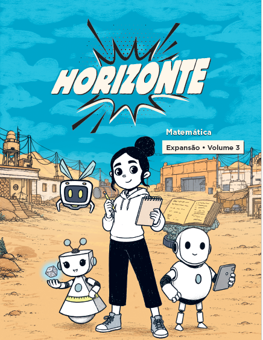

MATEMÁTICA · RECOMPOSIÇÃO DA APRENDIZAGEM
Guia de Avaliação Formativa por Rubrica
Orientações para o Professor Tutor observar estratégias, interpretar evidências, mediar e devolver ao estudante um próximo passo concreto.
Aquisição, Consolidação e Expansão descrevem o momento da habilidade observada. Não são rótulos permanentes do estudante.

COMO USAR
Um percurso de observação e intervenção
- PlanejarEscolha um foco e antecipe estratégias e equívocos possíveis.
- ProporPermita a primeira tentativa com desenho, objetos, cálculo ou algoritmo.
- InvestigarPeça que o estudante mostre e explique o significado dos números.
- MediarOfereça uma pergunta ou recurso específico e registre o efeito.
- RetomarDevolva um avanço e reaplique uma tarefa análoga com menos apoio.
INSTRUMENTO PREENCHÍVEL
Rubrica por critério
Selecione o nível apenas quando a tarefa oferecer evidência. Marque “Não observado” nos demais critérios; anote o apoio que foi necessário. As escolhas ficam neste navegador e podem ser impressas.
OITO SITUAÇÕES
O que a produção pode revelar
O resultado é uma pista. Leia o registro e peça explicação antes de concluir qual é a necessidade de aprendizagem.
PASSO A PASSO VISUAL
Jogos de frações da Coleção Horizonte
As imagens mostram o primeiro desafio de cada jogo, capturado em 29 de setembro de 2026. Peça a justificativa antes do clique e use a pontuação somente como evidência complementar. Abrir os jogos.
ORIENTAÇÃO E ACOMPANHAMENTO
Devolutiva ao Professor Tutor
Use evidências da condução e das produções, sem julgar a prática por um único acerto. Reconheça uma decisão pedagógica produtiva, indique um ajuste observável e combine o que verificar na reaplicação.
Devolutiva ao estudante
Converta a análise em uma fala curta: avanço, próximo passo e evidência a observar. Evite anunciar o nível da rubrica como rótulo da criança.
Referências e uso pedagógico
BNCC, Matemática dos anos iniciais: EF01MA02–04, EF01MA08, EF02MA06–08, EF03MA05–09, EF04MA03, EF04MA06–07, EF04MA09, EF05MA03–05, EF05MA07–08. Para o cálculo de fração de quantidade, o jogo 4 é ampliação; EF06MA09 não é exigência automática do 5º ano. Processos cognitivos de Bloom ajudam a graduar a demanda, sem determinar proficiência por idade.
Referenciais de planejamento: Simon (1995), Anderson e Krathwohl (2001), Black e Wiliam (2009), BNCC (2018). As interpretações de equívocos são hipóteses a confirmar com o estudante. Consultar BNCC.